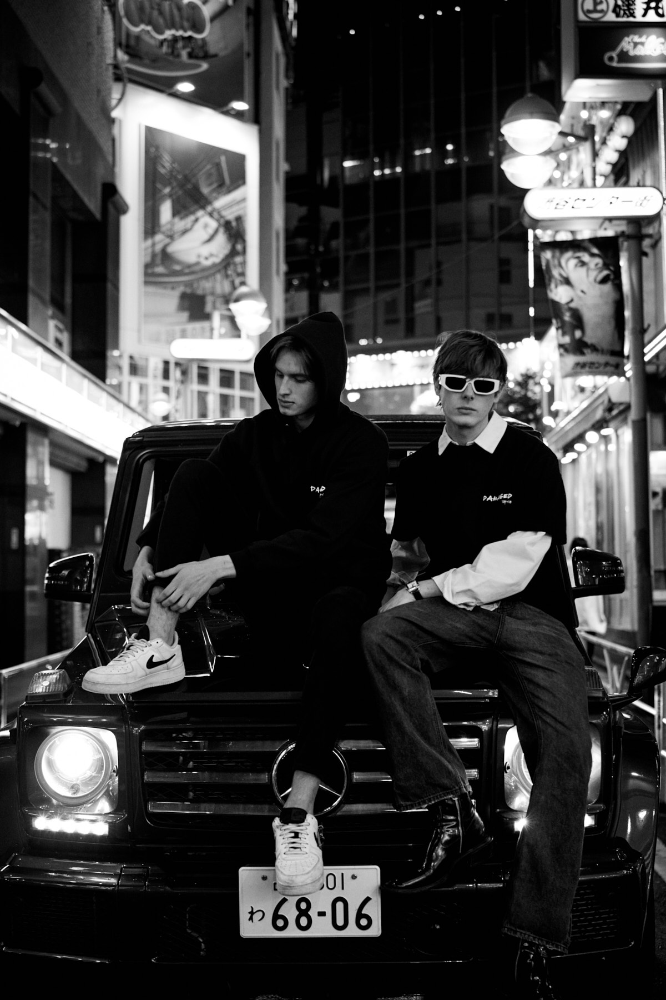
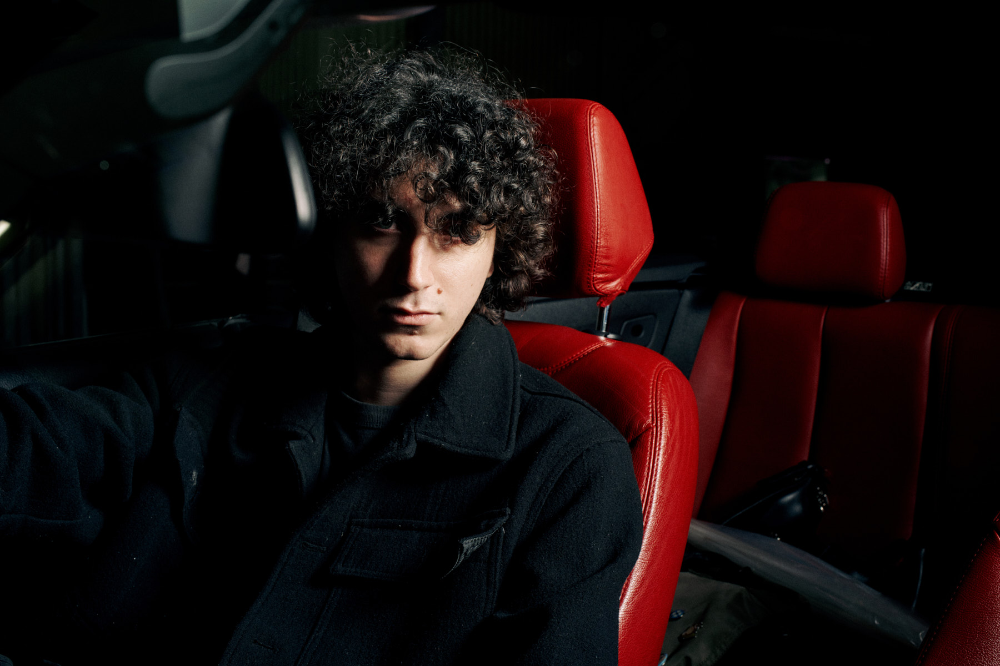

Project / Lookbook
A streetwear lookbook shot across Tokyo at night. Hooded figures move through neon-lit Shibuya and Shinjuku, framed inside vehicles and on rain-slick pavement — the brand's grit translated into editorial language.

